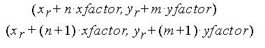

title: glPixelZoom function (Gl.h) description: The glPixelZoom function specifies the pixel zoom factors. ms.assetid: 57ead7d8-0502-46b4-9f66-dbb3cb75b0f9 keywords:
The glPixelZoom function specifies the pixel zoom factors.
void WINAPI glPixelZoom(
GLfloat xfactor,
GLfloat yfactor
);
xfactor
The x zoom factor for pixel write operations.
yfactor
The y zoom factor for pixel write operations.
This function does not return a value.
The following error code can be retrieved by the glGetError function.
| Name | Meaning |
|---|---|
| GL_INVALID_OPERATION | The function was called between a call to glBegin and the corresponding call to glEnd. |
The glPixelZoom function specifies values for the x and y zoom factors. During the execution of glDrawPixels or glCopyPixels, if (xr ,yr ) is the current raster position, and a given element is in the nth row and mth column of the pixel rectangle, then pixels whose centers are in the rectangle with corners at

are candidates for replacement. Any pixel whose center lies on the bottom or left edge of this rectangular region is also modified.
Pixel zoom factors are not limited to positive values. Negative zoom factors reflect the resulting image about the current raster position.
The following functions retrieve information related to glPixelZoom:
glGet with argument GL_ZOOM_X
glGet with argument GL_ZOOM_Y
| Requirement | Value |
|---|---|
| Minimum supported client | Windows 2000 Professional [desktop apps only] |
| Minimum supported server | Windows 2000 Server [desktop apps only] |
| Header | Gl.h |
| Library | Opengl32.lib |
| DLL | Opengl32.dll |